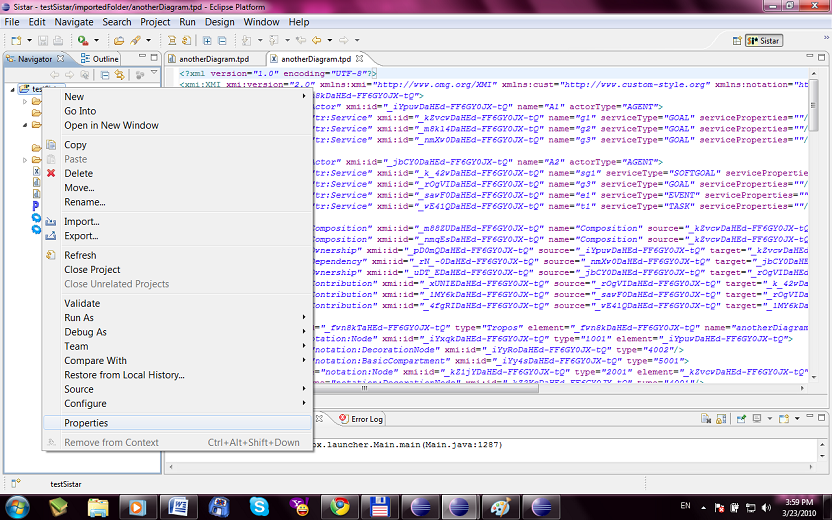
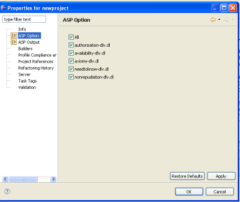
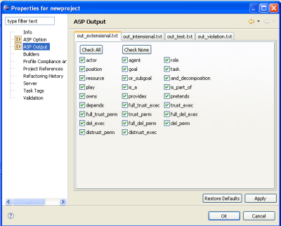

Project Properties
Right click a project and choose properties

ASP Option
Associated to a project is the options for ASP Analysis, user can specify which axioms in the
axiom folder is to be used in the analysis.

ASP Output
Also, user can specify which predicates are to be displayed in the ASP Analysis output
